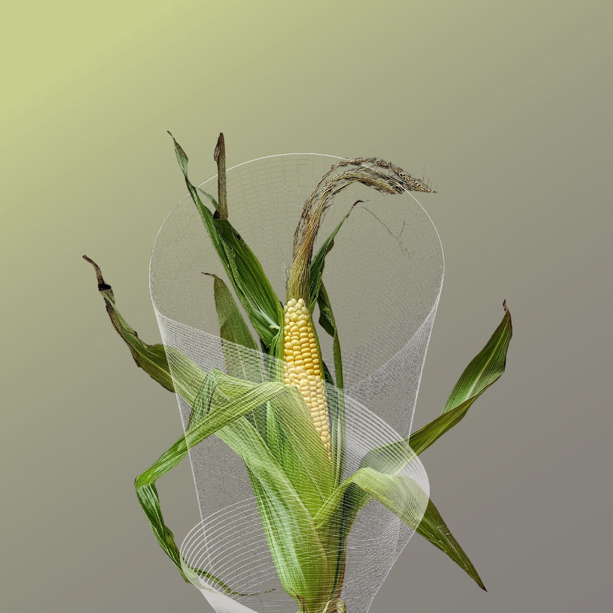
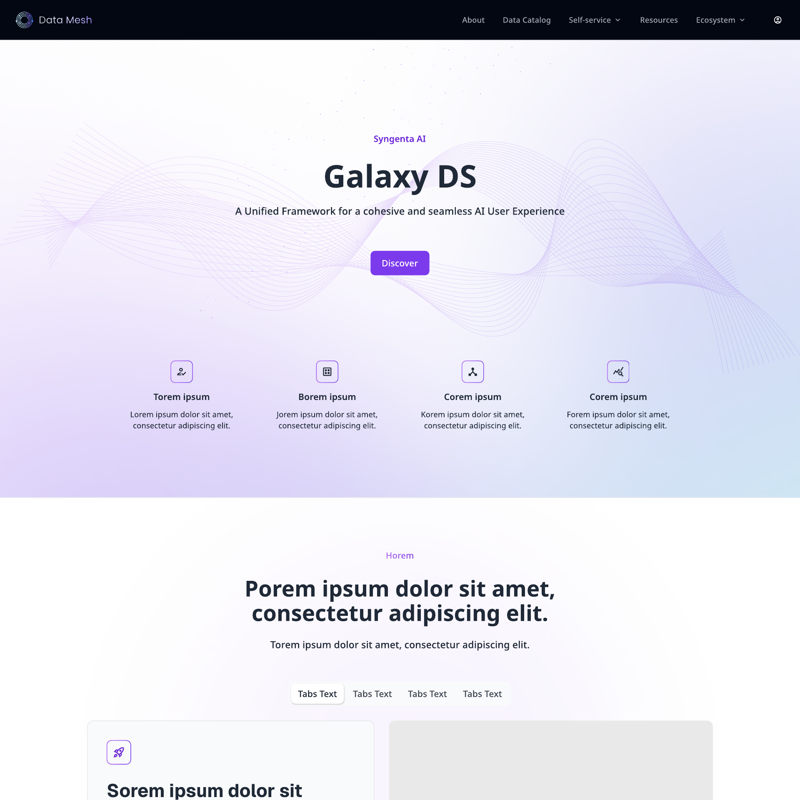
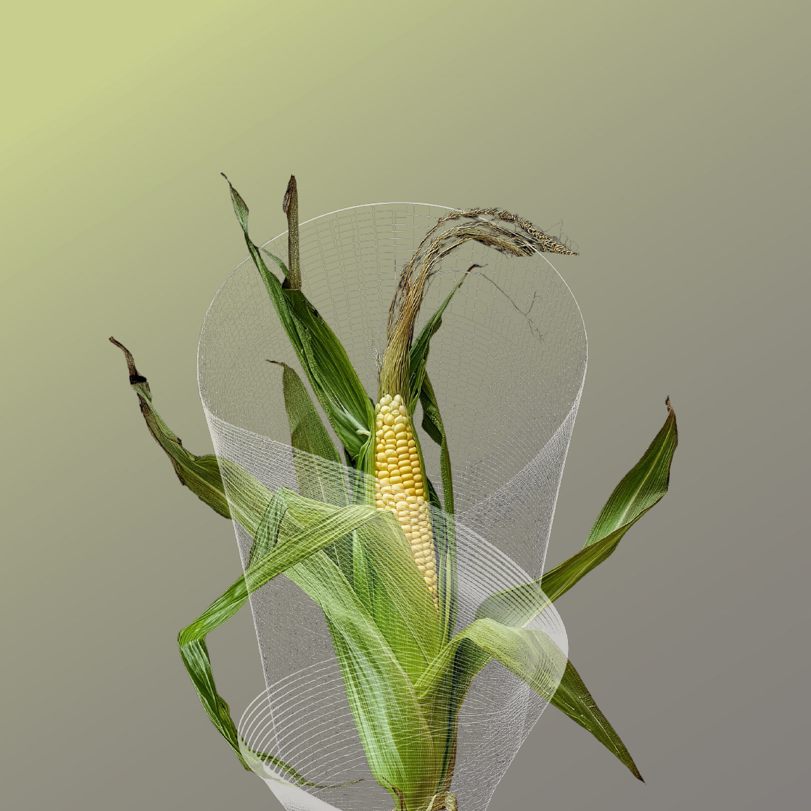

selected_work
Case Studies
// six projects across Syngenta and Dyson in research, testing, prototyping and design

AI Foundry Chat — Enterprise AI Hub
case_01 — syngenta // featured
AI Foundry Chat — Enterprise AI Hub
Research-led design of a unified enterprise AI hub — 15 moderated testing sessions shaped a validated roadmap, four user archetypes, and a shift from answering to anticipating.
read_case_study →
AI Foundry Design System & SDK
case_02 — syngenta // featured
AI Foundry Design System & SDK
One system behind every surface — foundations, AI-native components, and full light/dark theming powering the hub, mobile, and the platform SDK.
read_case_study →
AI Knowledge Hub — Create Your Own Assistant
case_03 — syngenta // featured
AI Knowledge Hub — Create Your Own Assistant
Connect SharePoint, Confluence, S3, or files and get a dedicated AI assistant per knowledge base — with quality scoring, sharing, and notifications built in.
read_case_study →Supersonic r™ Campaign
case_04 — dyson
Supersonic r™ Campaign
Owned the launch journey end-to-end — from defining product claims to introducing "category cards" that lifted PDP engagement by 5%.
read_case_study →
Airwrap Bluetooth Customisation
case_05 — dyson
Airwrap Bluetooth Customisation
End-to-end design of Dyson's flagship customisation tool — a guided flow helping users build their ideal Airwrap set based on hair type and styling needs.
read_case_study →Diagnostic Tool — Purifier
case_06 — dyson
Diagnostic Tool — Purifier
Redesigned the "Help Me Choose" journey using analytics, card sorting and A/B testing — cutting cognitive load and drop-off in a heavily constrained platform.
read_case_study →[ drag → ]